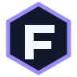
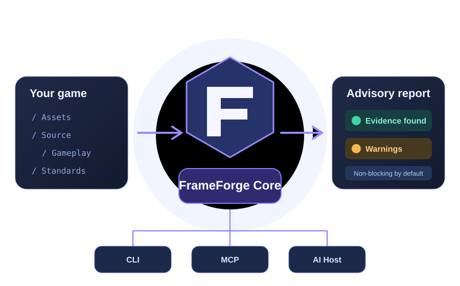
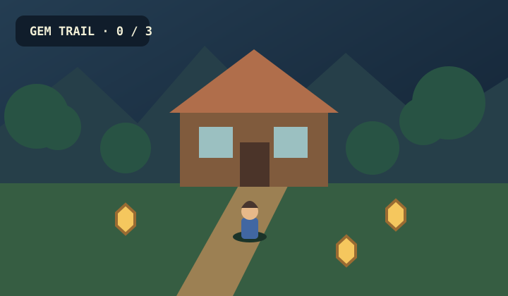

▱
Project-owned standards项目自己的规范
Keep architecture, UI, asset and workflow rules in your project—not in a global preset.架构、UI、美术资源和工作流程规范由项目自己维护。

FrameForgeA project-owned framework standards tool for game development. Discover your stack, choose only the guidance you need, and keep your own rules clear as the project grows.面向游戏开发的项目级框架规范工具。发现技术栈，按需选择指导能力，让项目自己的规范随着项目成长持续清晰。
Read-only by default · Plugins are opt-in · Warnings never block development默认只读 · 插件显式选择 · Warning 不阻塞开发

FrameForge does not prescribe one universal game architecture. It helps each team describe, inspect and maintain the standards that fit its own project.FrameForge 不规定所有游戏必须采用同一种架构，而是帮助团队定义、检查和维护适合自己项目的规范。
Keep architecture, UI, asset and workflow rules in your project—not in a global preset.架构、UI、美术资源和工作流程规范由项目自己维护。
See evidence, warnings and unevaluated areas. Advice informs decisions; it does not become a gate.查看证据、Warning 和未评估范围。检查结果辅助决策，不自动变成开发门禁。
Select engine and specialist guidance only when needed. Discovery never means activation.项目需要什么引擎或专业能力，就显式选择什么。发现不等于启用。
Keep core semantics consistent while each project chooses its own standards, plugins and tools.保持核心语义一致，同时允许每个项目选择自己的规范、插件和工具。
Own the source, Profile and canonical standards.项目自己维护源码、Profile 和正式规范。
Discover project signals and run only explicitly selected checks.发现项目技术信号，只运行明确选择的检查。
Separate observations, candidates, warnings and unevaluated scope.区分观察证据、候选项、Warning 和未评估范围。
The same read-only inspection semantics across command line and AI workflows.命令行和 AI 工作流使用相同的只读检查语义。
A tiny Godot 4 game with its own Profile, architecture rules and asset rules.一个最小 Godot 4 游戏，包含自己的 Profile、架构规范和资源规范。

Move around, collect three crystals, and see how a small game can own its own architecture without adopting a universal framework.控制角色收集三颗水晶，看看一个小型游戏项目如何拥有自己的架构，而不必采用统一框架。
↗ Open sample project打开示例项目 Guide →Godot guidance is currently Candidate. FrameForge CI checks discovery and advisory output; it does not claim to run or validate the Godot engine.Godot 指导目前仍为 Candidate。FrameForge CI 只验证发现和建议输出，不代表运行或验证了 Godot 引擎。
Python 3.10+ required. Install from this repository; a PyPI release is not available yet.需要 Python 3.10+。当前从 GitHub 安装，尚未发布 PyPI 包。
git clone https://github.com/bewaterhere-coder/FrameForge-Community.git cd FrameForge-Community python -m pip install .
frameforge --plugins frameforge examples/sample-game-godot
Try it, discuss what's missing, or contribute guidance for the engine you use.试用项目、讨论缺失能力，或为你使用的引擎贡献指导。